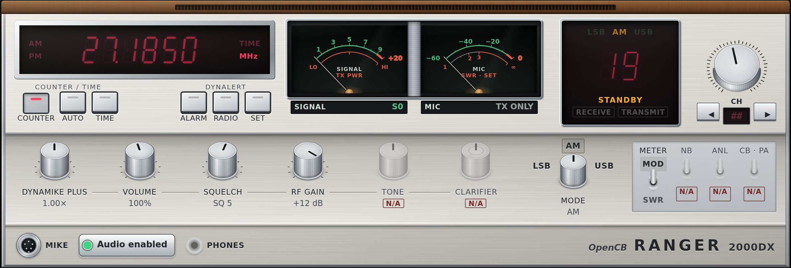

tuigse
TIG-shuh Irish, noun
understanding; discernment.
Tuigse LLC makes software that explains itself: a CB radio that runs in your browser, and free apps for Windows and Linux whose source, builds and behavior anyone can check.
TIG-shuh Irish, noun
understanding; discernment.
Tuigse LLC makes software that explains itself: a CB radio that runs in your browser, and free apps for Windows and Linux whose source, builds and behavior anyone can check.
A CB radio in your browser. Set your location, pick one of 40 channels, hold to talk, and hear the stations in range.

Free on GitHub under the MIT or Apache-2.0 license. No telemetry, accounts, ads or subscriptions.
Registry cleaner for Windows 10 and 11
Finds registry entries, shortcuts and temp files left behind by programs you have removed, and shows you each one before anything changes.
Or install with Scoop:
scoop bucket add hivemend https://github.com/Tuigse-oss/scoop-hivemend
scoop install hivemend
Disk-space treemap for Windows 10 and 11
Shows every folder and file on a drive as a tile sized by the space it takes, nested inside its folder. Zoom in like a map, then open or delete straight from it.
No release yet. You can build it from source today.
Source on GitHub
IRC client for Windows and Linux
A native desktop client that keeps your servers, channels and private chats in one window, with a nick list and a docked panel for highlights.
Each release is built by public CI from a tagged commit, and published with a SHA256SUMS.txt file and a GitHub build attestation. The apps are not code-signed yet, so Windows SmartScreen may warn you. These commands confirm that the file is the one the repository built:
Get-FileHash .\Hivemend-v0.1.6-x86_64-setup.exe
gh attestation verify Hivemend-v0.1.6-x86_64-setup.exe --repo Tuigse-oss/HiveMendThe first prints a hash to compare with SHA256SUMS.txt on the release page. The second needs the GitHub CLI.